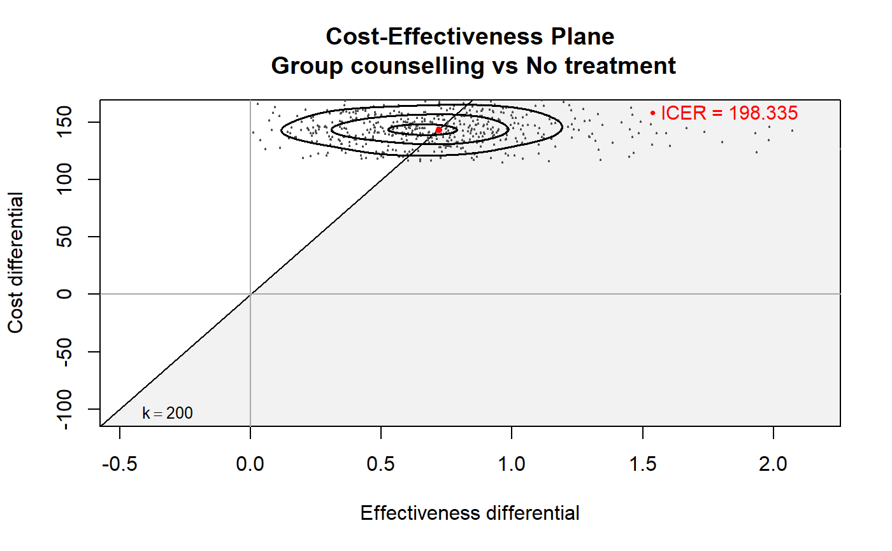
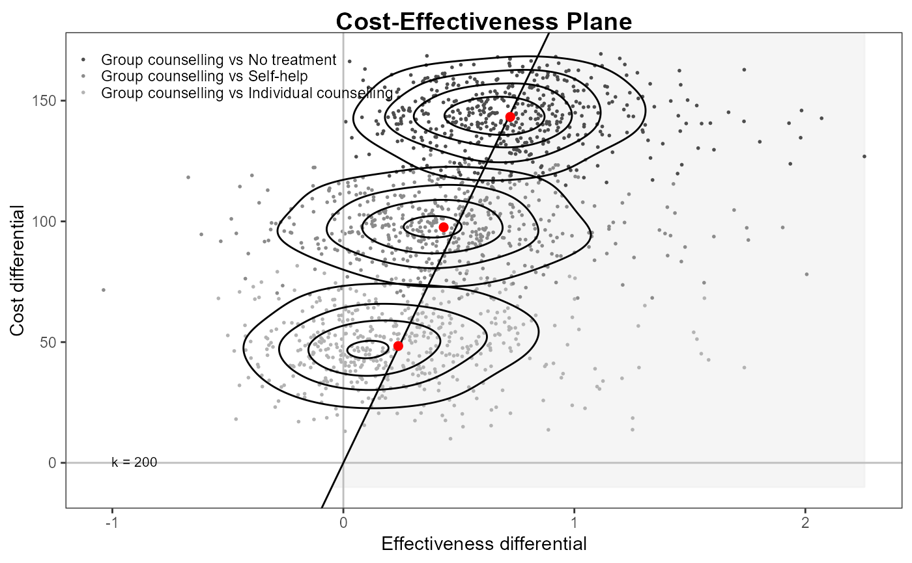

Produces a scatterplot of the cost-effectiveness plane, with a contour-plot of the bivariate density of the differentials of cost (y-axis) and effectiveness (x-axis). Also adds the sustainability area (i.e. below the selected value of the willingness-to-pay threshold).
# S3 method for bcea contour2( he, wtp = 25000, xlim = NULL, ylim = NULL, comparison = NULL, graph_type = c("base", "ggplot2"), ... ) contour2(he, ...)
| he | A |
|---|---|
| wtp | The selected value of the willingness-to-pay. Default is
|
| xlim | Limits on the x-axis (default= |
| ylim | Limits on the y-axis (default= |
| comparison | The comparison being plotted. Default to |
| graph_type | A string used to select the graphical engine to use for
plotting. Should (partial-)match the two options |
| ... | Arguments to be passed to |
A ggplot item containing the requested plot.
Returned only if graph_type="ggplot2".
Baio, G., Dawid, A. P. (2011). Probabilistic Sensitivity Analysis in Health Economics. Statistical Methods in Medical Research doi:10.1177/0962280211419832.
Baio G. (2012). Bayesian Methods in Health Economics. CRC/Chapman Hall, London.
bcea,
ceplane.plot,
contour.bcea
## create the bcea object m for the smoking cessation example data(Smoking) m <- bcea(e, c, ref = 4, interventions = treats, Kmax = 500) ## produce the plot contour2(m, wtp = 200, graph_type = "base")#> #> #># \donttest{ ## or use ggplot2 to plot multiple comparisons contour2(m, wtp = 200, ICER.size = 2, graph_type = "ggplot2")#> Warning: Duplicated aesthetics after name standardisation: colour#> Warning: Ignoring unknown parameters: geom, border, include, line_colour#> Warning: Ignoring unknown parameters: label.pos#>#> Error: Aesthetics must be valid data columns. Problematic aesthetic(s): y = c. #> Did you mistype the name of a data column or forget to add after_stat()?# }